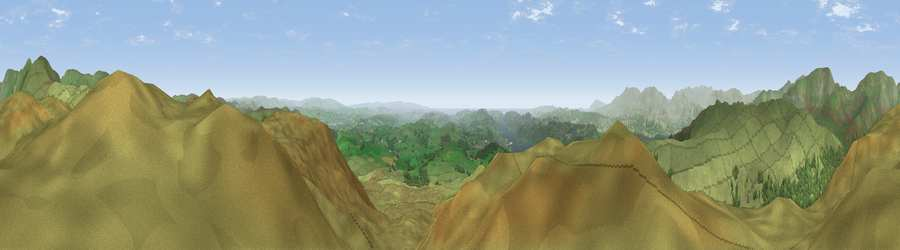

Sour Howes
#1404 in England · top 7% of its area beats it · near TroutbeckThe view, rendered

A 360° render of this exact spot computed from the terrain model, tree cover and land cover — summer colours, afternoon light, calibrated against photographs of famous viewpoints. Real trees, hedges and buildings will differ in detail.
The panorama
Grey silhouette: terrain skyline in each direction (720 bearings, Earth curvature and refraction included). Dashed green: skyline with trees (+15 m) and buildings (+8 m) as obstacles. Blue strip: how far the ground is visible on each bearing.
Where the view opens
Wedge length = distance to the farthest visible ground on that bearing (vegetation-aware). Rings at 10, 25 and 50 km.
What fills the view
84% grassland · 14% woodland · 2% water
Angular shares of the visible panorama (visual magnitude), not map area. Landscape diversity 0.23 (0–1 Shannon).
Key numbers
More beautiful places nearby
The staircase of upgrades: each row has a higher view potential than everything closer. Driving times are estimates from straight-line distance, calibrated against real road routing — check an actual route before setting out.
| Place | Direction | Drive | Score |
|---|---|---|---|
| Wansfell Pike | WNW · 3 km | ~8 min | 80.6 |
| Ill Bell | N · 5 km | ~10 min | 80.9 |
| High Street (summit) | N · 8 km | ~16 min | 82.6 |
| Viewpoint near Finsthwaite | SSW · 15 km | ~26 min | 84.7 |
| Viewpoint near Finsthwaite | SSW · 15 km | ~27 min | 90.3 |
| The Knoll | S · 415 km | ~394 min | 91.0 |
54.42031, -2.88514 · source: osm peak · position refined by local search. Computed location — check access rights before visiting.